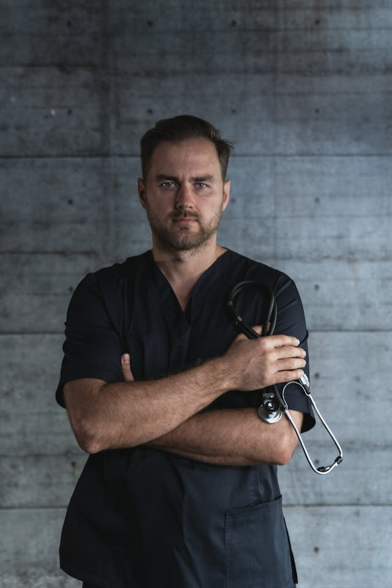

Nuestros Profesionales
Contamos con un equipo de profesionales altamente capacitados y comprometidos con la excelencia.
Dr. Miguel Garay
Pediatría
Pediatra con más de 10 años de experiencia en salud infantil y desarrollo.
Dra. Isabel Ferrer
Ginecología
Ginecóloga y obstetra con experiencia en salud reproductiva y partos de alto riesgo.

Dr. Pedro Solano
Cardiología
Cardiólogo con más de 15 años de experiencia en el tratamiento de enfermedades cardiovasculares.
Dra. Sofía Cardozo
Neurología
Neuróloga con experiencia en investigaciones y tratamiento de enfermedades neurodegenerativas.